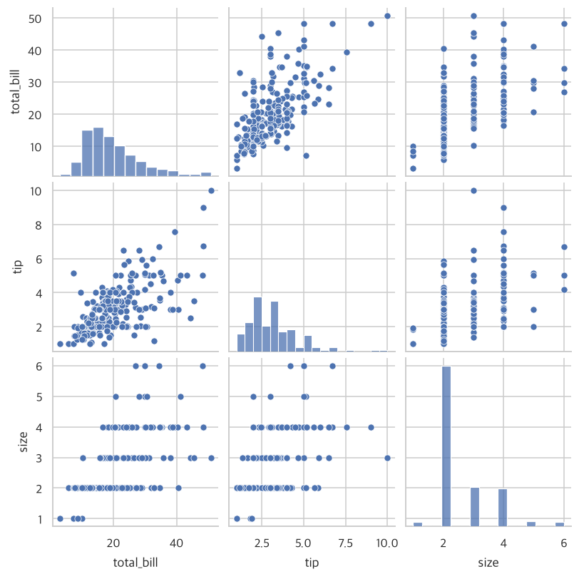

기술통계 분석이란?
분석 전에 데이터와 먼저 친해지기
- 기술통계가 왜 중요한지, 어떤 종류가 있는지 안다.
- 데이터 전체를 한 번에 요약(
info,describe)할 수 있다. - 빈칸(결측치)이 얼마나 있는지 확인할 수 있다.
- 변수들의 관계를 한 장의 그림(
pairplot)으로 볼 수 있다.
2.1 기술통계 기법의 중요성
많은 사람들이 데이터를 받자마자 어려운 통계 기법부터 적용하려 합니다. 하지만 그 전에 데이터 자체를 충분히 살펴보는 것이 훨씬 중요합니다.
의사는 처방부터 내지 않습니다. 체온·혈압·맥박을 재고 문진을 먼저 하죠. 기술통계는 데이터의 기본 건강검진입니다. 검진 없이 수술(고급 분석)부터 하면 큰일이 나요.
- 데이터 안에 어떤 패턴이 있는지 요약해 준다.
- 잘못 입력된 값, 빈칸 같은 문제를 미리 찾게 해 준다.
- 분석 결과를 다른 사람에게 설명할 때 가장 쉬운 소통 도구가 된다.
2.2 기술통계 기법의 분류
기술통계 기법은 세 가지 관점으로 나눠 볼 수 있습니다.
| 관점 | 구분 |
|---|---|
| ① 표현 방식 | 숫자(표·통계치)로 요약 vs 그래프로 요약 |
| ② 변수 종류 | 범주형 변수 vs 수치형 변수 |
| ③ 변수 개수 | 변수 하나의 분포 vs 변수들 사이의 관계(상관성) |
이 관점들을 조합하면 3~5장의 구성이 됩니다.
| 장 | 다루는 대상 | 예 |
|---|---|---|
| 3장 | 범주형 변수 (하나, 둘 이상) | 성별 인원수, 성별×생존 여부 교차표 |
| 4장 | 수치형 변수 (하나, 둘 이상) | 금액의 평균·퍼짐, 금액과 팁의 상관관계 |
| 5장 | 범주형 × 수치형 | 성별에 따른 금액 차이 |
2.3 실습 데이터 살펴보기
먼저 도구를 불러오고 데이터를 읽습니다. (1장과 같은 코드입니다. 새 파일을 시작할 때마다 맨 위에 붙여 넣으세요.)
import pandas as pd
import numpy as np
import matplotlib.pyplot as plt
import seaborn as sns
import platform
sns.set_theme(style='whitegrid') # 그래프 기본 스타일 (이 줄을 먼저!)
# 그래프에서 한글이 깨지지 않게 하는 설정 (운영체제에 맞는 글꼴 선택)
plt.rcParams['font.family'] = {'Darwin': 'Apple SD Gothic Neo', 'Windows': 'Malgun Gothic'}.get(platform.system(), 'NanumGothic')
plt.rcParams['axes.unicode_minus'] = False # 마이너스(-) 기호 깨짐 방지
tips = pd.read_csv("data/tips.csv")
titanic = pd.read_csv("data/titanic.csv")
tips.head()
| total_bill | tip | sex | smoker | day | time | size | |
|---|---|---|---|---|---|---|---|
| 0 | 16.99 | 1.01 | Female | No | Sun | Dinner | 2 |
| 1 | 10.34 | 1.66 | Male | No | Sun | Dinner | 3 |
| 2 | 21.01 | 3.50 | Male | No | Sun | Dinner | 3 |
| 3 | 23.68 | 3.31 | Male | No | Sun | Dinner | 2 |
| 4 | 24.59 | 3.61 | Female | No | Sun | Dinner | 4 |
| 변수명 | 뜻 | 종류 |
|---|---|---|
| total_bill | 총 계산 금액 (달러) | 수치형 |
| tip | 팁 (달러) | 수치형 |
| sex | 계산한 사람의 성별 (Male/Female) | 범주형(명목) |
| smoker | 일행 중 흡연자 여부 | 범주형(명목) |
| day | 요일 (Thur/Fri/Sat/Sun) | 범주형 |
| time | 식사 시간대 (Lunch/Dinner) | 범주형(명목) |
| size | 일행 인원수 | 수치형(정수) |
2.4 데이터 전체에 대한 요약 정보 파악하기
① info() : 데이터의 ‘신분증’ 확인
행·열 개수, 각 열의 자료형, 그리고 비어 있지 않은 값의 개수를 보여 줍니다.
tips.info()
<class 'pandas.DataFrame'> RangeIndex: 244 entries, 0 to 243 Data columns (total 7 columns): # Column Non-Null Count Dtype --- ------ -------------- ----- 0 total_bill 244 non-null float64 1 tip 244 non-null float64 2 sex 244 non-null str 3 smoker 244 non-null str 4 day 244 non-null str 5 time 244 non-null str 6 size 244 non-null int64 dtypes: float64(2), int64(1), str(4) memory usage: 13.5 KB
② describe() : 숫자 열의 ‘종합 성적표’
수치형 변수마다 개수(count), 평균(mean), 표준편차(std), 최솟값(min), 사분위수(25%, 50%, 75%), 최댓값(max)를 한 번에 계산합니다.
tips.describe()
| total_bill | tip | size | |
|---|---|---|---|
| count | 244.000000 | 244.000000 | 244.000000 |
| mean | 19.785943 | 2.998279 | 2.569672 |
| std | 8.902412 | 1.383638 | 0.951100 |
| min | 3.070000 | 1.000000 | 1.000000 |
| 25% | 13.347500 | 2.000000 | 2.000000 |
| 50% | 17.795000 | 2.900000 | 2.000000 |
| 75% | 24.127500 | 3.562500 | 3.000000 |
| max | 50.810000 | 10.000000 | 6.000000 |
글자(범주형) 열은 include="object"를 붙이면 요약됩니다. 몇 종류인지(unique), 가장 많은 값(top)과 그 개수(freq)를 알려 줍니다.
tips.describe(include="object")
| sex | smoker | day | time | |
|---|---|---|---|---|
| count | 244 | 244 | 244 | 244 |
| unique | 2 | 2 | 4 | 2 |
| top | Male | No | Sat | Dinner |
| freq | 157 | 151 | 87 | 176 |
R의 summary(course) 한 줄이 파이썬에서는 describe() 두 번(수치형, 범주형)에 해당합니다.
③ 빈칸(결측치) 찾기
결측치(NaN, NA)는 설문지에서 답을 비워 둔 칸입니다. 빈칸이 있는 채로 평균을 내면 계산이 틀어질 수 있어서, 얼마나 있는지부터 확인해야 해요.
tips 데이터는 빈칸이 없지만, 타이타닉 데이터에는 있습니다. 열별로 빈칸 개수를 세어 봅시다. (isna()는 “빈칸이니?”라고 묻고, sum()은 ‘예’의 개수를 셉니다.)
titanic.isna().sum()
| 0 | |
|---|---|
| survived | 0 |
| pclass | 0 |
| sex | 0 |
| age | 177 |
| sibsp | 0 |
| parch | 0 |
| fare | 0 |
| embarked | 2 |
| class | 0 |
| who | 0 |
| adult_male | 0 |
| deck | 688 |
| embark_town | 2 |
| alive | 0 |
| alone | 0 |
titanic.describe() # 나이(age)는 891명 중 714명만 값이 있어서 count가 더 적음
| survived | pclass | age | sibsp | parch | fare | |
|---|---|---|---|---|---|---|
| count | 891.000000 | 891.000000 | 714.000000 | 891.000000 | 891.000000 | 891.000000 |
| mean | 0.383838 | 2.308642 | 29.699118 | 0.523008 | 0.381594 | 32.204208 |
| std | 0.486592 | 0.836071 | 14.526497 | 1.102743 | 0.806057 | 49.693429 |
| min | 0.000000 | 1.000000 | 0.420000 | 0.000000 | 0.000000 | 0.000000 |
| 25% | 0.000000 | 2.000000 | 20.125000 | 0.000000 | 0.000000 | 7.910400 |
| 50% | 0.000000 | 3.000000 | 28.000000 | 0.000000 | 0.000000 | 14.454200 |
| 75% | 1.000000 | 3.000000 | 38.000000 | 1.000000 | 0.000000 | 31.000000 |
| max | 1.000000 | 3.000000 | 80.000000 | 8.000000 | 6.000000 | 512.329200 |
pandas의 mean(), describe() 등은 빈칸을 자동으로 빼고 계산합니다. (R은 기본적으로 빈칸이 있으면 결과도 NA가 되어 na.rm=TRUE를 써야 했는데, 파이썬은 반대로 기본이 ‘빼고 계산’입니다.)
④ pairplot() : 변수들의 관계를 한 장으로
모든 수치형 변수를 둘씩 짝지어 산점도(점 그래프)를 그려 주는 그림입니다. 대각선에는 각 변수의 분포(히스토그램)가 나옵니다.
반 친구들의 키와 몸무게를 좌표평면에 점으로 찍는다고 생각해 보세요. 점들이 우상향으로 모이면 “키가 클수록 몸무게도 나간다”는 관계가 눈에 보이죠. pairplot은 모든 변수 쌍에 대해 이 그림을 한꺼번에 그려 줍니다.
sns.pairplot(tips[["total_bill", "tip", "size"]])
plt.show()

total_bill과 tip 칸의 점들이 오른쪽 위로 올라가는 모양이면 “금액이 클수록 팁도 많다”는 관계를 의심해 볼 수 있습니다. 구체적인 숫자(상관계수)로 확인하는 방법은 4장에서 배웁니다.
| 하고 싶은 일 | R | 파이썬 |
|---|---|---|
| 전체 요약 | summary(df) | df.describe(), df.info() |
| 변수 간 관계 그림 | plot(df) | sns.pairplot(df) |
| 빈칸 세기 | colSums(is.na(df)) | df.isna().sum() |